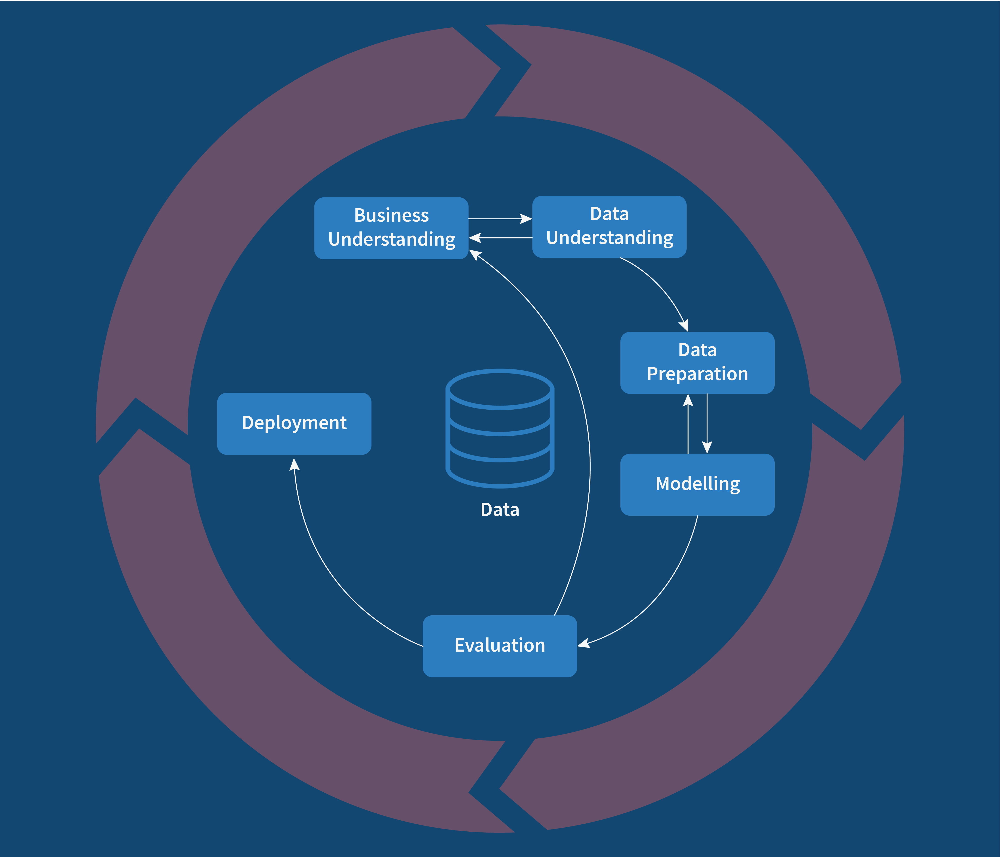
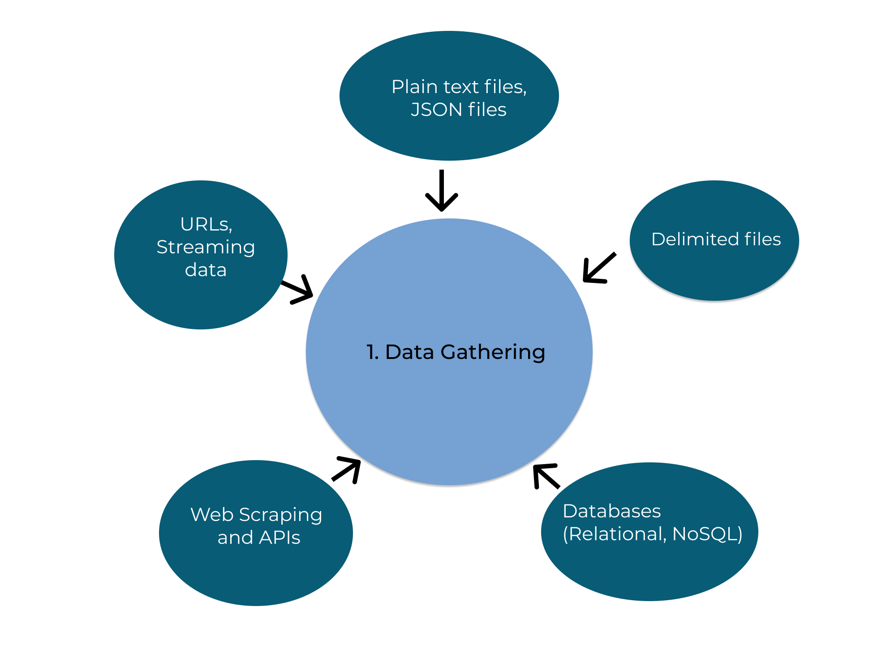
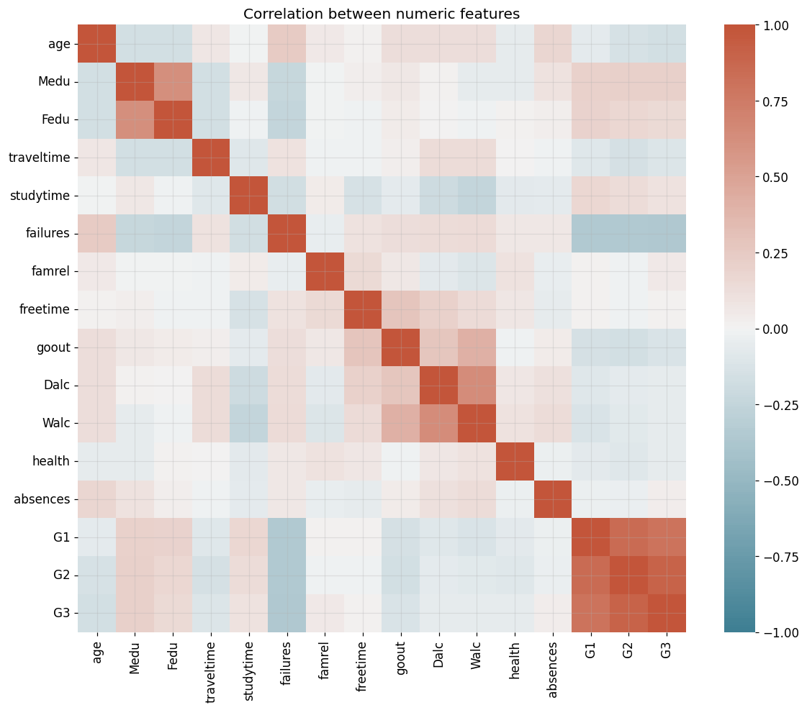
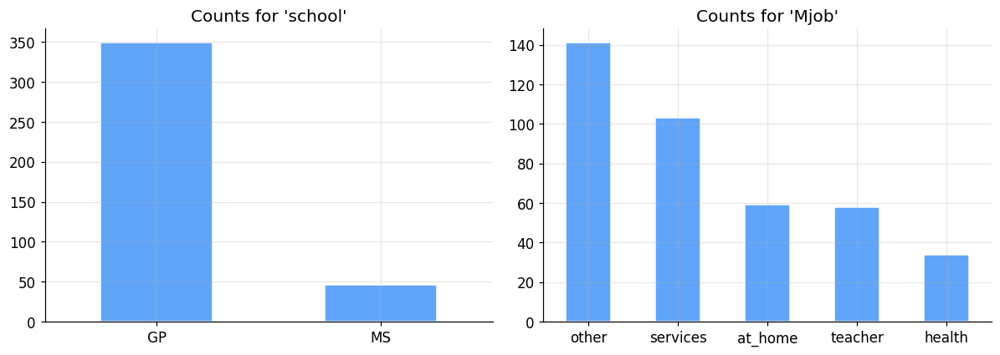
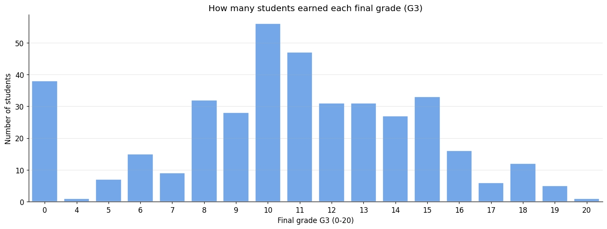

The Machine Learning Workflow
DCS 404 · Data Science and Machine Learning
Last time we answered what machine learning is. Today we tackle a question that sounds simpler but trips up far more people: once you actually have a problem to solve, what do you do first, and what do you do next?
Here's something I've watched happen too many times. A student learns a dozen algorithms, can recite the maths behind gradient descent, and then sits down in front of a real dataset and freezes — because knowing the tools is not the same as knowing the process. A project doesn't fail because you picked logistic regression over a random forest. It fails because nobody defined what "success" meant, or because a crucial feature was missing and nobody noticed until the very end, or because the model looked brilliant in testing and fell apart the moment it met the real world.
So today we're going to learn the process — a battle-tested recipe called CRISP-DM that professional data scientists have leaned on since the 1990s — and we're going to walk it end to end on a real dataset, writing real code at every step, all the way from "here's a business problem" to "here's a saved model ready to deploy." By the end you'll have built a complete machine learning project, not just a model.
Let's get organised.
How to work through this
Same deal as last time. Run every code cell (Shift + Enter) and actually look at the output before you read
my commentary underneath — the whole notebook is built around seeing the result first and then making sense
of it.
A couple of things specific to today. This module uses a real dataset (student records from two Portuguese
schools), and I've bundled it in the data/ folder next to this notebook, so everything runs offline. And
because this is a workflow, the cells build on each other in order — the cleaning step depends on the
loading step, the model depends on the cleaning, and so on. If something errors, the usual cause is running
cells out of order; just run from the top.
As before, watch for the moments where I stop and ask you something or suggest a change to try. They're where the real learning happens.
Learning objectives
After completing this module you will be able to:
- Describe the six phases of the CRISP-DM workflow and explain why a structured process matters.
- Turn a vague business goal into a concrete, measurable machine learning problem.
- Explore an unfamiliar dataset: summarise it, visualise its distributions and relationships, and check its quality for missing values, outliers, and imbalance.
- Prepare raw data for modelling by cleaning it, encoding categorical variables, and splitting it correctly.
- Train, evaluate, and compare regression models using appropriate metrics.
- Understand what "deployment" involves, including saving and reloading a trained model.
Setup
Run this once. It loads our libraries, sets a consistent plotting style, and reads in the dataset we'll use
all the way through. If an import fails, install it with pip install <package>.
from pathlib import Path
import numpy as np
import pandas as pd
import matplotlib.pyplot as plt
import seaborn as sns
# A consistent look for every plot in this notebook
plt.rcParams.update({
"figure.figsize": (7, 4.5),
"figure.dpi": 110,
"axes.grid": True,
"grid.alpha": 0.3,
"axes.spines.top": False,
"axes.spines.right": False,
"font.size": 11,
})
sns.set_palette("deep")
RANDOM_STATE = 0
# Load the Student Performance dataset. It is semicolon-separated, not comma-separated.
# We look in a couple of likely locations so this runs whether you launched Jupyter
# from the repo root or from inside the notebooks/ folder.
for candidate in [Path("data/student-mat.csv"),
Path("notebooks/data/student-mat.csv"),
Path("resources/dataset/student-mat.csv")]:
if candidate.exists():
df = pd.read_csv(candidate, sep=";")
print(f"Loaded dataset from: {candidate}")
break
else:
raise FileNotFoundError("Could not find student-mat.csv. Expected it in a data/ folder next to the notebook.")
print(f"Shape: {df.shape[0]} students, {df.shape[1]} columns")
df.head()
Loaded dataset from: data/student-mat.csv
Shape: 395 students, 33 columns
| school | sex | age | address | famsize | Pstatus | Medu | Fedu | Mjob | Fjob | ... | famrel | freetime | goout | Dalc | Walc | health | absences | G1 | G2 | G3 | |
|---|---|---|---|---|---|---|---|---|---|---|---|---|---|---|---|---|---|---|---|---|---|
| 0 | GP | F | 18 | U | GT3 | A | 4 | 4 | at_home | teacher | ... | 4 | 3 | 4 | 1 | 1 | 3 | 6 | 5 | 6 | 6 |
| 1 | GP | F | 17 | U | GT3 | T | 1 | 1 | at_home | other | ... | 5 | 3 | 3 | 1 | 1 | 3 | 4 | 5 | 5 | 6 |
| 2 | GP | F | 15 | U | LE3 | T | 1 | 1 | at_home | other | ... | 4 | 3 | 2 | 2 | 3 | 3 | 10 | 7 | 8 | 10 |
| 3 | GP | F | 15 | U | GT3 | T | 4 | 2 | health | services | ... | 3 | 2 | 2 | 1 | 1 | 5 | 2 | 15 | 14 | 15 |
| 4 | GP | F | 16 | U | GT3 | T | 3 | 3 | other | other | ... | 4 | 3 | 2 | 1 | 2 | 5 | 4 | 6 | 10 | 10 |
5 rows × 33 columns
1. The map: CRISP-DM
Before we touch the data, let me give you the map we'll be following. It's called CRISP-DM — the Cross-Industry Standard Process for Data Mining — and despite the mouthful of a name, the idea is down-to-earth. It's simply a checklist of the six stages that almost every data project moves through, dreamt up back in the late 1990s and still the default playbook in industry today.
The six phases are:
-
Business Understanding — what are we actually trying to achieve, and how will we know if we succeeded?
-
Data Understanding — what data do we have, and what shape is it in?
-
Data Preparation — cleaning and reshaping the raw data into something a model can eat.
-
Modelling — the part everyone thinks of as "machine learning": training the actual model.
-
Evaluation — did it work? Is it good enough to trust?
-
Deployment — putting the model to work in the real world.
Why bother with a formal process at all? Because, as the old saying goes, a problem well defined is a problem half solved. You can be brilliant at algorithms and still sink a project through plain disorganisation. Imagine getting all the way to evaluation only to discover the one feature that actually predicts your target was never collected — weeks of work, gone. CRISP-DM exists to catch that kind of thing early, by making sure you do the right things in the right order.
And one crucial detail before we start: this is a loop, not a line. You'll often reach evaluation, realise your data wasn't good enough, and circle right back to preparation — or even back to redefining the problem. That's not failure; that's the process working as intended. Let me draw it.

Fig: CRISP-DM Process flow2. Phase 1 — Business Understanding
This is the phase everyone is tempted to skip, and it's the one that most often decides whether a project lives or dies. Before a single line of code, we ask: what are we trying to accomplish, and why? Concretely, this phase is about defining the problem, understanding who the result is for, taking stock of the data and resources we have, and — critically — deciding up front what "success" will look like.
Let me make it real with the scenario we'll use all module. Picture a school that wants to spot students at risk of a poor final grade early enough to help them. A counsellor can only give extra attention to a handful of students, so a vague "some kids are struggling" isn't actionable. They need something specific.
So we translate that wish into a concrete machine learning problem:
-
The goal. Predict a student's final grade (
G3, on a 0–20 scale) from information available about them. -
The task type. The target is a number, so this is regression — the flavour of supervised learning we met in Module 1 with the temperature example.
-
Who it's for. School counsellors, who will use the predictions to prioritise who to support.
-
What success looks like. On average, our predictions should land within about two grade points of the truth. (We'll define exactly how we measure that when we reach evaluation.)
Notice we haven't mentioned an algorithm yet. That's deliberate. The problem definition comes first; the tool comes later. Now that we know what we're chasing, let's go and meet the data.
3. Phase 2 — Data Understanding
Now we get to know our data. This is where exploratory data analysis (EDA) lives — the detective work of summarising a dataset and letting it surprise you before you commit to any modelling. Rush this phase and you'll pay for it later, every time.
3.1 Where data comes from
Our data arrived as a tidy CSV file, but that's the easy case. In real projects data comes from all over: plain text and delimited files, relational and NoSQL databases, web scraping and APIs, live streams. And it comes in two broad shapes. Structured data is the neat, tabular kind — rows and columns, numbers and categories — the sort you can drop straight into a spreadsheet, like ours. Unstructured data is everything messier: free text, images, audio, video. Most of the world's data is unstructured, which is exactly why it's so valuable and so hard to work with. Today we're firmly in structured-data territory, which is the right place to learn the workflow.
This phase is primarily divided into the following sub-steps:
-
Data Acquisition: Gathering data
-
Plain text files, delimited files, JSON files
-
Databases (Relational or NOSQL)
-
Web Scraping and APIs
-
URLs, Streaming data
-
Data Exploration with verification of its quality
-
Quick Summary of data
-
Attribute Information
-
Descriptive Statistics
-
Histogram, bar plots
-
Correlation Matrix
-
Data Quality(DQ) Verification
You should develop the habit of creating a simple document with at least a description of the ideal data needed to test a hypothesis. This will help you:
- Streamline the modeling process.
- Ensure that all the future data come in an improved form.
Data needs to be there to start any data science project or data analysis project. The diagram below represents the common methods of gathering or collecting data.

Fig: Different ways of Data collection.There are different sites in internet such as: Kaggle and UCI Machine learning Repository , from where we can collect the data for machine learning projects.
3.2 The dataset: student performance
We're using the Student Performance dataset from the UCI Machine Learning Repository (Cortez & Silva, 2008): real records from two Portuguese secondary schools, gathered from school reports and questionnaires. It has 395 students and 33 columns — 32 input features plus the target.
The features paint a rounded picture of each student. A few worth knowing about now:
| Feature | Meaning |
|---|---|
sex, age, address |
basic demographics |
studytime, failures, absences |
study habits and history |
Medu, Fedu, Mjob, Fjob |
parents' education and jobs |
goout, Dalc, Walc, health |
lifestyle (social life, alcohol, health) |
G1, G2 |
grades from the first and second periods |
G3 |
the final grade — this is our target |
That last group is worth a mental flag already: G1 and G2 are earlier grades for the same student, so
we'd expect them to be very strong predictors of the final grade G3. Hold that thought — it'll come back
to bite us in an interesting way.
3.3 A quick summary
The very first thing I do with any new dataset is ask pandas for a quick summary: how many rows and columns,
what the data types are, and whether anything is missing. df.info() gives all of that at a glance.
df.info()
<class 'pandas.DataFrame'>
RangeIndex: 395 entries, 0 to 394
Data columns (total 33 columns):
# Column Non-Null Count Dtype
--- ------ -------------- -----
0 school 395 non-null str
1 sex 395 non-null str
2 age 395 non-null int64
3 address 395 non-null str
4 famsize 395 non-null str
5 Pstatus 395 non-null str
6 Medu 395 non-null int64
7 Fedu 395 non-null int64
8 Mjob 395 non-null str
9 Fjob 395 non-null str
10 reason 395 non-null str
11 guardian 395 non-null str
12 traveltime 395 non-null int64
13 studytime 395 non-null int64
14 failures 395 non-null int64
15 schoolsup 395 non-null str
16 famsup 395 non-null str
17 paid 395 non-null str
18 activities 395 non-null str
19 nursery 395 non-null str
20 higher 395 non-null str
21 internet 395 non-null str
22 romantic 395 non-null str
23 famrel 395 non-null int64
24 freetime 395 non-null int64
25 goout 395 non-null int64
26 Dalc 395 non-null int64
27 Walc 395 non-null int64
28 health 395 non-null int64
29 absences 395 non-null int64
30 G1 395 non-null int64
31 G2 395 non-null int64
32 G3 395 non-null int64
dtypes: int64(16), str(17)
memory usage: 122.6 KB
# How many columns are text (categorical) versus numeric? This shapes our whole preparation plan later.
n_categorical = df.select_dtypes(include="object").shape[1]
n_numeric = df.select_dtypes(include=np.number).shape[1]
print(f"Categorical (text) features : {n_categorical}")
print(f"Numeric features : {n_numeric}")
print(f"Total : {n_categorical + n_numeric}")
Categorical (text) features : 17
Numeric features : 16
Total : 33
/var/folders/cm/07z8g9cd5r3092d58mr51l3w0000gn/T/ipykernel_91886/3426734064.py:2: Pandas4Warning: For backward compatibility, 'str' dtypes are included by select_dtypes when 'object' dtype is specified. This behavior is deprecated and will be removed in a future version. Explicitly pass 'str' to `include` to select them, or to `exclude` to remove them and silence this warning.
See https://pandas.pydata.org/docs/user_guide/migration-3-strings.html#string-migration-select-dtypes for details on how to write code that works with pandas 2 and 3.
n_categorical = df.select_dtypes(include="object").shape[1]
So we've got a mix: some columns are numbers already, but a good chunk are text like "yes"/"no" or
"teacher". File that away — machine learning models only speak numbers, so every one of those text columns
will need converting before we can model. That's a job for Phase 3.
3.4 Descriptive statistics
Numbers and text want summarising differently. For the numeric columns we ask for the classic five-number summary — mean, spread, min, max, quartiles. For the text columns those don't make sense, so instead we ask how many unique values each has and which is most common.
# Summary of the numeric columns
df.describe(include=[np.number])
| age | Medu | Fedu | traveltime | studytime | failures | famrel | freetime | goout | Dalc | Walc | health | absences | G1 | G2 | G3 | |
|---|---|---|---|---|---|---|---|---|---|---|---|---|---|---|---|---|
| count | 395.000000 | 395.000000 | 395.000000 | 395.000000 | 395.000000 | 395.000000 | 395.000000 | 395.000000 | 395.000000 | 395.000000 | 395.000000 | 395.000000 | 395.000000 | 395.000000 | 395.000000 | 395.000000 |
| mean | 16.696203 | 2.749367 | 2.521519 | 1.448101 | 2.035443 | 0.334177 | 3.944304 | 3.235443 | 3.108861 | 1.481013 | 2.291139 | 3.554430 | 5.708861 | 10.908861 | 10.713924 | 10.415190 |
| std | 1.276043 | 1.094735 | 1.088201 | 0.697505 | 0.839240 | 0.743651 | 0.896659 | 0.998862 | 1.113278 | 0.890741 | 1.287897 | 1.390303 | 8.003096 | 3.319195 | 3.761505 | 4.581443 |
| min | 15.000000 | 0.000000 | 0.000000 | 1.000000 | 1.000000 | 0.000000 | 1.000000 | 1.000000 | 1.000000 | 1.000000 | 1.000000 | 1.000000 | 0.000000 | 3.000000 | 0.000000 | 0.000000 |
| 25% | 16.000000 | 2.000000 | 2.000000 | 1.000000 | 1.000000 | 0.000000 | 4.000000 | 3.000000 | 2.000000 | 1.000000 | 1.000000 | 3.000000 | 0.000000 | 8.000000 | 9.000000 | 8.000000 |
| 50% | 17.000000 | 3.000000 | 2.000000 | 1.000000 | 2.000000 | 0.000000 | 4.000000 | 3.000000 | 3.000000 | 1.000000 | 2.000000 | 4.000000 | 4.000000 | 11.000000 | 11.000000 | 11.000000 |
| 75% | 18.000000 | 4.000000 | 3.000000 | 2.000000 | 2.000000 | 0.000000 | 5.000000 | 4.000000 | 4.000000 | 2.000000 | 3.000000 | 5.000000 | 8.000000 | 13.000000 | 13.000000 | 14.000000 |
| max | 22.000000 | 4.000000 | 4.000000 | 4.000000 | 4.000000 | 3.000000 | 5.000000 | 5.000000 | 5.000000 | 5.000000 | 5.000000 | 5.000000 | 75.000000 | 19.000000 | 19.000000 | 20.000000 |
# Summary of the categorical (text) columns
df.describe(include=["object"])
/var/folders/cm/07z8g9cd5r3092d58mr51l3w0000gn/T/ipykernel_91886/1805765710.py:2: Pandas4Warning: For backward compatibility, 'str' dtypes are included by select_dtypes when 'object' dtype is specified. This behavior is deprecated and will be removed in a future version. Explicitly pass 'str' to `include` to select them, or to `exclude` to remove them and silence this warning.
See https://pandas.pydata.org/docs/user_guide/migration-3-strings.html#string-migration-select-dtypes for details on how to write code that works with pandas 2 and 3.
df.describe(include=["object"])
| school | sex | address | famsize | Pstatus | Mjob | Fjob | reason | guardian | schoolsup | famsup | paid | activities | nursery | higher | internet | romantic | |
|---|---|---|---|---|---|---|---|---|---|---|---|---|---|---|---|---|---|
| count | 395 | 395 | 395 | 395 | 395 | 395 | 395 | 395 | 395 | 395 | 395 | 395 | 395 | 395 | 395 | 395 | 395 |
| unique | 2 | 2 | 2 | 2 | 2 | 5 | 5 | 4 | 3 | 2 | 2 | 2 | 2 | 2 | 2 | 2 | 2 |
| top | GP | F | U | GT3 | T | other | other | course | mother | no | yes | no | yes | yes | yes | yes | no |
| freq | 349 | 208 | 307 | 281 | 354 | 141 | 217 | 145 | 273 | 344 | 242 | 214 | 201 | 314 | 375 | 329 | 263 |
Already there are things to notice. Look at absences: the average is a handful of days, but the maximum is
enormous compared to the typical value — a hint that a few students skew things badly, which we'll confirm
when we hunt for outliers. And in the categorical summary you can see, for instance, which school most
students attend. This is the kind of quiet familiarity with the data that pays off later.
3.5 Distributions: histograms
Summary numbers hide the shape of the data. A histogram fixes that by bucketing each feature into ranges and counting how many students fall in each — turning a column of numbers into a picture you can read in a second.
# One histogram per numeric feature
axes = df.select_dtypes(include=np.number).hist(figsize=(15, 12), edgecolor="white")
plt.suptitle("Distribution of every numeric feature", y=0.92, fontsize=13)
plt.show()

These little pictures are full of stories. absences is heavily skewed — most students miss few classes, a
handful miss many. failures is lopsided too: the vast majority have zero past failures. And crucially, look
at G3, our target: it's roughly bell-shaped but with a suspicious spike at zero — students who scored 0 on
the final. Those zeros are real and they'll matter. Reading distributions like this is a skill worth
practising; it tells you what you're dealing with before any model does.
3.6 Relationships: the correlation matrix
Histograms show one feature at a time. But we also care how features move together — and especially how each one relates to our target. A correlation matrix measures that for every pair of numeric features at once, on a scale from -1 (move in opposite directions) through 0 (unrelated) to +1 (move together). A heatmap makes it readable at a glance.
plt.figure(figsize=(11, 9))
corr = df.select_dtypes(include=np.number).corr()
sns.heatmap(corr, vmin=-1, vmax=1, center=0,
cmap=sns.diverging_palette(220, 20, n=200), annot=False, square=True)
plt.title("Correlation between numeric features")
plt.tight_layout()
plt.show()
# Which features are most correlated with our target, G3?
print("Strongest correlations with the final grade G3:")
print(corr["G3"].drop("G3").sort_values(ascending=False).head(6).round(2))

Strongest correlations with the final grade G3:
G2 0.90
G1 0.80
Medu 0.22
Fedu 0.15
studytime 0.10
famrel 0.05
Name: G3, dtype: float64
And there's the payoff, in the printout: G2 and G1 are by far the strongest predictors of G3, which is
no surprise — a student's earlier grades tell you a lot about their final one. This is genuinely useful to
know before modelling. But it also plants a flag we'll return to: if our model leans almost entirely on G1
and G2, is it really doing anything clever, and would it even be usable early in the year before those
grades exist? Good questions. Park them for now.
3.7 The categorical features
Correlation is a numeric idea, so our text columns sat out that last plot. To get a feel for them we count how often each category appears. Rather than drown you in all 17, here are two representative ones.
fig, axes = plt.subplots(1, 2, figsize=(11, 4))
for ax, col in zip(axes, ["school", "Mjob"]):
df[col].value_counts().plot(kind="bar", ax=ax, color="#60a5fa", edgecolor="white")
ax.set_title(f"Counts for '{col}'")
ax.set_xlabel(""); ax.tick_params(axis="x", rotation=0)
plt.tight_layout()
plt.show()

The heights tell you the balance of each category — most students come from one of the two schools, mothers' jobs cluster in a few categories, and so on. Imbalances like these are worth noting because they can quietly bias a model toward whatever it saw most of.
3.8 Data quality checks
Last stop in getting to know the data, and arguably the most important: is it any good? Three quick checks catch most problems — missing values, outliers, and an imbalanced target.
# 1) Missing values: what fraction of each column is empty?
missing = df.isna().mean().sort_values(ascending=False)
print("Columns with the most missing values:")
print(missing.head().round(3))
print(f"\nTotal missing values in the entire dataset: {int(df.isna().sum().sum())}")
Columns with the most missing values:
school 0.0
paid 0.0
G2 0.0
G1 0.0
absences 0.0
dtype: float64
Total missing values in the entire dataset: 0
Good news — not a single missing value. That's rare in the real world (usually you're patching holes everywhere), but it means we get to skip missing-data handling this time. We'll still talk about how you'd handle it, because next time you won't be so lucky.
Now outliers — those extreme values that sit far from everything else. A boxplot is the classic way to spot them: anything drawn as a dot beyond the "whiskers" is a candidate outlier.
plt.figure(figsize=(15, 6))
df.select_dtypes(include=np.number).boxplot(rot=90)
plt.title("Boxplots of numeric features — dots beyond the whiskers are candidate outliers")
plt.tight_layout()
plt.show()

absences jumps out immediately, with a long tail of students way above the norm. A handful of features have
a few outliers too. We'll deal with absences in the preparation phase.
Finally, is our target balanced? For a regression target we just look at its distribution — if some grade values are rare, the model will see few examples of them and struggle there.
plt.figure(figsize=(13, 5))
sns.countplot(x="G3", data=df, color="#60a5fa", edgecolor="white")
plt.title("How many students earned each final grade (G3)")
plt.xlabel("Final grade G3 (0-20)"); plt.ylabel("Number of students")
plt.tight_layout()
plt.show()

This is imbalanced: some grades are common, others (the very low and very high ones) are represented by only a few students. That spike at 0 we spotted earlier is clearly visible. It doesn't mean those students don't count — quite the opposite — but it does mean the model will have less to learn from at the extremes, which is worth remembering when we judge its performance.
That's Phase 2 done. We now know our data's shape, its distributions, its relationships, and its flaws. Time to roll up our sleeves and prepare it.
4. Phase 3 — Data Preparation
Here's a statistic that surprises every new data scientist: this phase — cleaning and reshaping the data — is where you'll spend the majority of your time on most real projects. It's unglamorous, nobody puts it in the demo, and it matters enormously. A brilliant algorithm fed messy data produces messy predictions. Garbage in, garbage out, exactly as we said last module.
We'll do three things: clean the data, encode the text columns into numbers, and split it for training and testing.
4.1 Cleaning the data
Cleaning covers a lot of ground — handling missing values, taming outliers, removing duplicates, fixing typos. Let me touch the two that matter here.
Missing values. We're lucky today; there are none. But you won't always be, so know your options. You can delete rows or columns with missing data (simple, but you throw away information), or you can impute — fill the gaps with the column's mean or median, or its most frequent value. Which one is right depends on how much is missing and why.
Outliers. These we do have, in absences. Rather than delete those students (they're real, and deleting
data is a big decision), we'll cap the feature: any absence count above a sensible threshold gets pulled
down to that threshold. This keeps the student in the dataset while stopping a few extreme values from
dominating. Let me cap at 15 days.
# Cap the 'absences' outliers at 15 so a few extreme students don't dominate the model.
before_max = df["absences"].max()
df["absences"] = np.where(df["absences"] > 15, 15, df["absences"])
print(f"'absences' maximum before capping: {before_max}")
print(f"'absences' maximum after capping : {df['absences'].max()}")
'absences' maximum before capping: 75
'absences' maximum after capping : 15
4.2 Encoding the text columns
Remember our earlier flag: models only understand numbers, but 17 of our columns are text. We have to convert them, and how we convert them depends on the kind of category.
Label encoding simply assigns each category a number: no becomes 0, yes becomes 1. This is perfect for
two-valued columns, and for columns with a real order to them. But it has a trap — it implies an ordering.
If we label-encoded Mjob as teacher=0, health=1, services=2, the model would wrongly assume services is
"more" than teacher, which is nonsense; job is not a quantity.
One-hot encoding solves that. For a column with no natural order, it creates a separate 0/1 column for
each category — a Mjob_teacher column, a Mjob_health column, and so on — so no false ordering sneaks in.
The cost is extra columns, but it's the honest choice for unordered ("nominal") categories.
So our plan: label-encode the yes/no binary columns, and one-hot encode the genuinely unordered ones.
from sklearn.preprocessing import LabelEncoder
# Genuinely unordered ("nominal") categories -> one-hot encode
cat_nominal = ["Mjob", "Fjob", "reason", "guardian"]
# Two-valued ("binary") categories -> label encode to 0/1
cat_binary = ["school", "sex", "address", "famsize", "Pstatus", "schoolsup",
"famsup", "paid", "activities", "nursery", "higher", "internet", "romantic"]
# Label-encode each binary column to 0/1
for col in cat_binary:
df[col] = LabelEncoder().fit_transform(df[col])
# One-hot encode the nominal columns (dtype=int keeps them as clean 0/1 rather than True/False)
df = pd.get_dummies(df, columns=cat_nominal, prefix=cat_nominal, dtype=int)
print(f"After encoding, the dataset has {df.shape[1]} columns (it grew because of one-hot encoding).")
print("Every column is now numeric:", df.select_dtypes(include="object").empty)
df.head()
After encoding, the dataset has 46 columns (it grew because of one-hot encoding).
Every column is now numeric: True
| school | sex | age | address | famsize | Pstatus | Medu | Fedu | traveltime | studytime | ... | Fjob_other | Fjob_services | Fjob_teacher | reason_course | reason_home | reason_other | reason_reputation | guardian_father | guardian_mother | guardian_other | |
|---|---|---|---|---|---|---|---|---|---|---|---|---|---|---|---|---|---|---|---|---|---|
| 0 | 0 | 0 | 18 | 1 | 0 | 0 | 4 | 4 | 2 | 2 | ... | 0 | 0 | 1 | 1 | 0 | 0 | 0 | 0 | 1 | 0 |
| 1 | 0 | 0 | 17 | 1 | 0 | 1 | 1 | 1 | 1 | 2 | ... | 1 | 0 | 0 | 1 | 0 | 0 | 0 | 1 | 0 | 0 |
| 2 | 0 | 0 | 15 | 1 | 1 | 1 | 1 | 1 | 1 | 2 | ... | 1 | 0 | 0 | 0 | 0 | 1 | 0 | 0 | 1 | 0 |
| 3 | 0 | 0 | 15 | 1 | 0 | 1 | 4 | 2 | 1 | 3 | ... | 0 | 1 | 0 | 0 | 1 | 0 | 0 | 0 | 1 | 0 |
| 4 | 0 | 0 | 16 | 1 | 0 | 1 | 3 | 3 | 1 | 2 | ... | 1 | 0 | 0 | 0 | 1 | 0 | 0 | 1 | 0 | 0 |
5 rows × 46 columns
Every column is a number now, and the dataset grew a little because one-hot encoding split each nominal column into several. The data is finally in a form a model can consume.
4.3 Splitting into training and test sets
This last step is small in code and huge in importance, so let me be emphatic about it. We are going to split our data into two piles. The model gets to learn from the training set only. The test set we lock in a drawer and never let the model see during training — it's the final exam, our only honest measure of how the model will do on students it has never encountered.
Why so strict? Because if you let a model study the test before grading it on the test, of course it scores well — and that score is a lie. A model that has secretly seen the answers tells you nothing about the real world. The whole point of holding data back is to keep ourselves honest. We'll use an 80/20 split: 80% to learn from, 20% to be judged on.
![]()
from sklearn.model_selection import train_test_split
y = df["G3"] # what we want to predict: the final grade
X = df.drop(columns=["G3"]) # everything else: the features
X_train, X_test, y_train, y_test = train_test_split(
X, y, test_size=0.2, random_state=RANDOM_STATE)
print(f"Training set: {X_train.shape[0]} students (the model learns from these)")
print(f"Test set : {X_test.shape[0]} students (locked away until evaluation)")
Training set: 316 students (the model learns from these)
Test set : 79 students (locked away until evaluation)
One more idea to mention, because you'll meet it constantly: feature scaling. Some algorithms care a lot
about the scale of features — an age of 18 and an absences of 15 live on totally different number
ranges, and certain models get confused by that. Scaling squeezes every feature into a comparable range so no
single one dominates just because its numbers happen to be bigger. The model we're about to use, plain linear
regression, doesn't strictly need it, so we'll keep things simple here — but tuck the concept away, because
for algorithms like SVMs and KNN it's essential.
And that's data preparation. Cleaned, encoded, split. The unglamorous majority of the work is behind us — now for the fun part.
5. Phase 4 — Modelling
This is the phase everyone shows up for. But notice how much had to happen before we got here — that's the real lesson of the workflow. With clean, prepared data in hand, the modelling itself is almost anticlimactic.
Choosing a model means weighing a few things: the kind of problem (ours is regression), how much data we have, how fast it needs to run, and how important it is that we can explain the model's decisions. We'll start with the natural first choice for a regression problem: linear regression, the very model that rediscovered the temperature formula last module. It's fast, and its simplicity makes it a great baseline — you always want a simple model to measure fancier ones against.
Then, to see whether something more powerful helps, we'll also train a random forest — a model that combines many decision trees (we'll unpack how it works in a later module). For now, treat it as a stronger, more flexible competitor and let's see if it earns its keep.
from sklearn.linear_model import LinearRegression
from sklearn.ensemble import RandomForestRegressor
# Baseline: a simple, fast, interpretable linear model
linreg = LinearRegression()
linreg.fit(X_train, y_train) # this line is where the learning happens
# Challenger: a more flexible ensemble of decision trees
forest = RandomForestRegressor(n_estimators=200, random_state=RANDOM_STATE)
forest.fit(X_train, y_train)
print("Both models trained.")
print("Remember: they have only seen the training set. The test set is still locked away.")
Both models trained.
Remember: they have only seen the training set. The test set is still locked away.
That's it — two trained models. The .fit() call is where all the objective-and-optimization machinery from
Module 1 quietly ran. Now comes the moment of truth: are they any good?
6. Phase 5 — Evaluation
Training a model is easy. Knowing whether to trust it is the hard, essential part — and it's where we finally open that locked drawer and test on data the models have never seen.
For a regression problem like ours, three metrics tell the story:
- MAE (Mean Absolute Error) — on average, how many grade points off are we? The most intuitive one: an MAE of 1.5 means our typical prediction misses by about 1.5 grades. Lower is better.
- RMSE (Root Mean Squared Error) — similar, but it squares the errors before averaging, so it punishes big misses much harder than small ones. Lower is better. If RMSE is much larger than MAE, you have some badly-wrong predictions dragging things up.
- R² (R-squared) — what fraction of the variation in grades the model actually explains, from 0 (useless, no better than always guessing the average) to 1 (perfect). Higher is better.
Let's compute all three, for both models, on the held-out test set.
from sklearn.metrics import mean_absolute_error, mean_squared_error, r2_score
def evaluate(model, name):
preds = model.predict(X_test)
return {
"Model": name,
"MAE": mean_absolute_error(y_test, preds),
"RMSE": np.sqrt(mean_squared_error(y_test, preds)),
"R2": r2_score(y_test, preds),
}
results = pd.DataFrame([evaluate(linreg, "Linear Regression"),
evaluate(forest, "Random Forest")]).set_index("Model")
results.round(3)
| MAE | RMSE | R2 | |
|---|---|---|---|
| Model | |||
| Linear Regression | 1.583 | 2.339 | 0.802 |
| Random Forest | 1.133 | 1.894 | 0.870 |
Read that table like a scorecard. The MAE tells you, in plain grade points, how far off a typical prediction is — and for both models it should be comfortably within the two-point target we set back in Business Understanding. That's the number I'd actually report to the school counsellor, because it's the one they can feel. Compare the two models and you'll see whether the random forest's extra complexity bought us anything; often on tidy tabular data like this, the humble linear model is startlingly hard to beat, which is a lesson in itself.
Numbers in a table are abstract, though. Let me show you how good the predictions are by plotting each predicted grade against the student's actual grade. Perfect predictions would sit exactly on the diagonal line; the tighter the cloud hugs that line, the better.
# Predicted vs actual for the linear model. The closer to the diagonal, the better.
preds = linreg.predict(X_test)
plt.figure(figsize=(6.5, 6.5))
plt.scatter(y_test, preds, alpha=0.6, edgecolor="white", color="#3b82f6")
lims = [-1, 21]
plt.plot(lims, lims, "--", color="gray", label="perfect prediction")
plt.xlim(lims); plt.ylim(lims)
plt.xlabel("Actual final grade")
plt.ylabel("Predicted final grade")
plt.title("Predicted vs. actual grades (linear regression)")
plt.legend()
plt.tight_layout()
plt.show()

Most points hug the diagonal nicely, which is what we want to see. But look at the bottom-left: the students who actually scored 0 are predicted to have positive grades — the model refuses to believe in those zeros, because they were rare and unusual (exactly the imbalance we flagged in Phase 2). This is the value of plotting your results rather than trusting a single summary number: the picture shows you where the model struggles, not just how much.
One more question every practitioner asks: which features is the model actually leaning on? A random forest can tell us how important each feature was to its predictions. Let's look at the top few.
# The random forest's view of which features mattered most
importances = pd.Series(forest.feature_importances_, index=X.columns).sort_values(ascending=False)
plt.figure(figsize=(8, 5))
importances.head(10).iloc[::-1].plot(kind="barh", color="#60a5fa", edgecolor="white")
plt.title("Top 10 most important features (random forest)")
plt.xlabel("Relative importance")
plt.tight_layout()
plt.show()

And there's the flag we planted way back in Phase 2, now fully raised: G2 and G1 dominate everything else.
The model is essentially predicting the final grade from the two grades just before it, which is accurate but
maybe not very insightful — and useless if a counsellor wants to intervene early in the year, before those
grades even exist. This is a genuine, real-world modelling dilemma, and it's a perfect example of why
evaluation loops back to the earlier phases: a school might well ask us to drop G1 and G2 and rebuild,
trading accuracy for a model that's actually usable when it matters. (That's one of your exercises.)
This is also the phase where we'd normally check for overfitting — a model that aced the training data but flops on the test data, having memorised rather than learned. Comparing training and test scores is the usual tell, and it's a theme we'll develop properly in later modules.
7. Phase 6 — Deployment
A model sitting in a notebook helps no one. Deployment is the final phase, where the model actually goes to work — and it's the step students most often forget exists, even though in industry it's often the hardest part.
Deployment usually means three things: writing up what you built and how well it performs (so stakeholders trust it), wrapping the model in something the rest of the world can call, and setting up monitoring to catch the model quietly degrading over time as the world changes underneath it.
The technical heart of it is being able to save a trained model and reload it later somewhere else — inside a web server, say — without retraining from scratch. Let me show you that, because it's satisfyingly simple.
import joblib
import tempfile, os
# Save the trained model to a file. In a real project this path would live on a server;
# here we use a temporary file just to demonstrate the round trip.
model_path = os.path.join(tempfile.gettempdir(), "student_grade_model.joblib")
joblib.dump(linreg, model_path)
print(f"Model saved to: {model_path}")
# ... later, in a completely separate program, we load it back and use it. No retraining needed.
loaded_model = joblib.load(model_path)
# Predict the final grade for the first student in our test set
one_student = X_test.iloc[[0]]
predicted = loaded_model.predict(one_student)[0]
actual = y_test.iloc[0]
print(f"\nReloaded model predicts this student's final grade: {predicted:.1f}")
print(f"Their actual final grade was : {actual}")
Model saved to: /var/folders/cm/07z8g9cd5r3092d58mr51l3w0000gn/T/student_grade_model.joblib
Reloaded model predicts this student's final grade: 14.4
Their actual final grade was : 14
That round trip — train once, save, then load and predict anywhere — is the backbone of real deployment. The saved file is the model, ready to be dropped onto a server.
To turn it into something a website or app can call, you'd typically wrap it in a small web service. Here's the shape of it (a Flask app), just so you recognise it when you meet it for real in the final module — don't run this here, it's for illustration:
from flask import Flask, request, jsonify
import joblib
app = Flask(__name__)
model = joblib.load("student_grade_model.joblib") # load the saved model once, at startup
@app.route("/predict", methods=["POST"])
def predict():
features = request.get_json() # receive a student's features as JSON
grade = model.predict([features])[0] # run the model
return jsonify({"predicted_grade": round(float(grade), 1)})
# A counsellor's dashboard could now POST a student's data to /predict and get a grade back.
That's the whole journey — business question to a live, callable model. The full deployment story (Flask, packaging, serving) is the finale of this course, in Module 13.
8. Putting it all together
Step back and look at the ground we covered. We started with a fuzzy wish — "help students before they fail" — and walked it, phase by phase, all the way to a saved model that can predict a final grade on demand. Here's the whole journey on one page:
| Phase | What it asks | What we actually did |
|---|---|---|
| 1. Business Understanding | What are we solving, and what is success? | Predict final grade G3; success = within ~2 points |
| 2. Data Understanding | What have we got? | Explored 395 students, saw skew, outliers, and that G1/G2 dominate |
| 3. Data Preparation | Get it model-ready | Capped absences, encoded 17 text columns, split 80/20 |
| 4. Modelling | Build the thing | Trained linear regression and a random forest |
| 5. Evaluation | Is it any good? | Measured MAE/RMSE/R², plotted predictions, found the G1/G2 dependency |
| 6. Deployment | Put it to work | Saved and reloaded the model; sketched a Flask API |
And remember the single most important feature of this whole map: it's a loop. Our evaluation surfaced a real problem — the model relies on grades that don't exist early in the year — and the honest next move is to walk right back to Business Understanding and Data Preparation and try again with a more useful set of features. That circling back isn't a detour; it is data science. You rarely get it perfect on the first lap.
 Fig: CRISP-DM Infographics
Fig: CRISP-DM Infographics
9. Your turn
The only way this workflow becomes second nature is by walking it yourself. Add cells under each exercise and have a go — several of these deliberately send you back to an earlier phase, which is exactly the mindset we're building.
Exercise 1 — Build the "early warning" model.
This is the big one, and it follows directly from our evaluation. Rebuild the whole modelling and evaluation
step but drop G1 and G2 from the features (X = df.drop(columns=["G3", "G1", "G2"])). How much worse do
MAE, RMSE, and R² get? Write a sentence for the school: is a model that works early in the year, but less
accurately, worth the trade?
Exercise 2 — A third model.
Add a DecisionTreeRegressor (from sklearn.tree) to the comparison table alongside the linear model and the
forest. Where does it land? Is more complexity always better here?
Exercise 3 — Explore a feature you're curious about.
Pick any feature (say studytime, goout, or Dalc) and make a plot of it against G3 — a boxplot or a
scatter. Does more study time actually track with higher grades in this data? Does going out track with lower?
Exercise 4 — Change the split.
Re-run the train/test split with test_size=0.3 and a different random_state. Do the evaluation numbers
move? What does that wobble tell you about trusting a single split? (This is the seed of cross-validation,
coming in Module 13.)
Exercise 5 — Try scaling.
Standardise the features with StandardScaler (from sklearn.preprocessing) before fitting the linear model.
Does the score change? Now explain why it barely moves for linear regression but would matter a great deal
for a distance-based model like KNN.
Reflection questions. - We spent far more of this notebook on understanding and preparing data than on the model itself. Why do you think that ratio holds in real projects too? - Our model predicts grades well but leans almost entirely on prior grades. Is a model that's accurate but not actionable a success or a failure? Who decides? - CRISP-DM is a loop. Describe a realistic situation where evaluating a model would send you all the way back to Business Understanding.
10. If you remember nothing else
-
Machine learning is a process, not just a model. CRISP-DM names its six phases: Business Understanding, Data Understanding, Data Preparation, Modelling, Evaluation, Deployment.
-
Define the problem and what success means before you write any code. A problem well defined is half solved.
-
Exploratory data analysis — summaries, distributions, correlations, quality checks — is detective work you do before modelling, and it saves you from nasty surprises later.
-
Data preparation (cleaning, encoding text into numbers, splitting) is where most of the real work lives. Models only speak numbers, and garbage in means garbage out.
-
Always keep an untouched test set. A model graded on data it trained on tells you a comforting lie.
-
Evaluate with metrics that fit the problem (MAE, RMSE, R² for regression) and with plots — the picture shows you where the model fails, not just how often.
-
Deployment — saving, serving, and monitoring the model — is a real phase, not an afterthought.
-
It's a loop. Circling back to an earlier phase when something doesn't hold up is the process working, not failing.
11. Further reading and glossary
Further reading
- The CRISP-DM 1.0 step-by-step guide — the original, surprisingly readable reference.
- P. Cortez and A. Silva, Using Data Mining to Predict Secondary School Student Performance — the paper behind our dataset.
- The UCI Student Performance dataset — full documentation and the raw files.
- scikit-learn's Preprocessing guide — the practical reference for encoding and scaling.
Glossary
| Term | Meaning |
|---|---|
| CRISP-DM | A six-phase standard process for data mining and ML projects. |
| EDA | Exploratory Data Analysis — summarising and visualising data to understand it. |
| Structured / unstructured data | Tabular data vs. free-form data like text, images, audio. |
| Outlier | An extreme value far from the rest of the observations. |
| Imbalanced data | When some target values or classes are far rarer than others. |
| Label encoding | Turning categories into single integers (good for binary or ordered categories). |
| One-hot encoding | Turning each category into its own 0/1 column (good for unordered categories). |
| Training / test set | Data the model learns from vs. held-out data used to judge it honestly. |
| Feature scaling | Rescaling features to a comparable range so none dominates by magnitude alone. |
| MAE / RMSE / R² | Regression metrics: average error, error that punishes big misses, variance explained. |
| Deployment | Putting a trained model into real use, including saving, serving, and monitoring it. |
That's the workflow, start to finish. You've now built a complete machine learning project — not just a model, but the whole disciplined journey around it. From here on, every algorithm we learn slots into Phase 4 of this same map, and you already know how to wrap a proper project around it. Next up, Module 2: we open up linear regression and finally see, gear by gear, how it learns.
DCS 404 — Data Science and Machine Learning